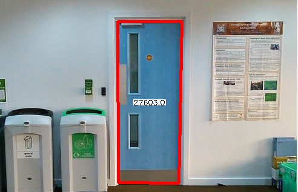

Once the image has been prepared as described in the preparation
panel, the detection of the door (if it exists) is commenced.
-
First the contours of the edge map are extracted using
the OpenCV function findContours.
-
Contours which fulfil the conditions to be a polygon
are then added to a separate list. The remaining contours
are then discarded.
-
The list of polygons are then filtered based on their area.
Any polygons with an area below a certain value are discarded
due to them being too small to be a door.
-
The remaining polygons are then filtered based on their number
of sides. Any polygons without 4 sides are discarded, thus
leaving a list of quadrilaterals.
-
The quadrilaterals are then filtered based on their height to
width ratio. Any quadrilaterals that have a ratio outside of
the bounds of a single door is discarded.
-
The largest quadrilateral (if present) is then selected as the
detected door.
The door is then tracked using the OpenCV function
matchTemplate until a new door is detected.
